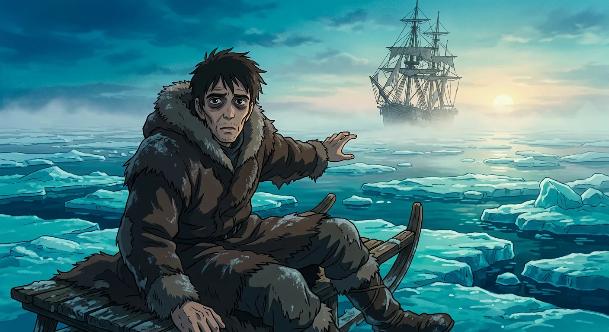
Dreams of Eternal Light and Glory
Robert Walton is a brave explorer with a big dream. He wants to sail all the way to the cold North Pole. He writes letters to his sister Margaret about his exciting adventure. Robert imagines the North Pole as a magical place full of wonders and light. He has worked very hard to get ready for this journey.
But Robert feels lonely. He wishes he had a true friend to share his thoughts with. One foggy day, his ship sees something amazing on the ice. A very tall person is riding a sled pulled by dogs far away. The next morning, they find another sled floating on the ice. A tired, cold man sits inside. The sailors help him onto their ship. Robert takes care of him and they become friends. The stranger is very sad, but also kind. He decides to tell Robert his story. It sounds like it will be full of surprising things.
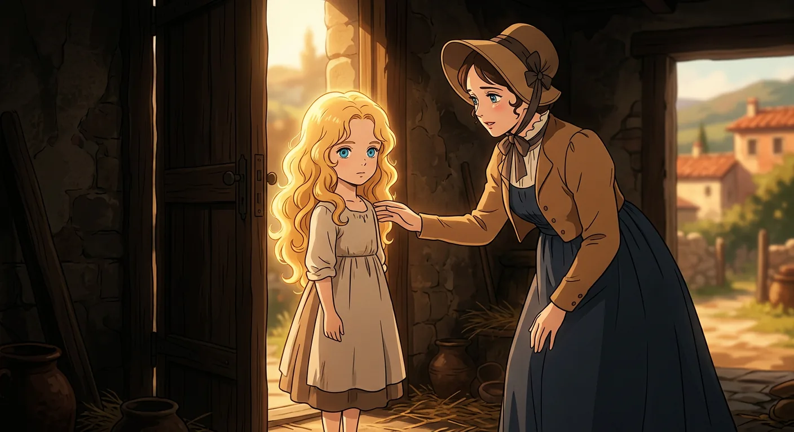
A Family Forged in Grief and Devotion
Victor was born in Geneva to a kind and loving family. His father was a good man who cared deeply about helping others. Before Victor was born, his father had a dear friend named Beaufort who became very poor and sick. Beaufort had a brave daughter named Caroline who worked hard to take care of him. Sadly, Beaufort passed away, and Caroline was left all alone. Victor's father found her and helped her, and after two years they got married. They loved each other very much and traveled to beautiful places in Italy. That is where baby Victor was born. His parents adored him and gave him a happy, gentle childhood full of love and learning. When Victor was five years old, his mother found a golden-haired girl named Elizabeth living with a poor family. Elizabeth's parents could not care for her anymore. Victor's kind mother brought Elizabeth home. From that day on, Elizabeth became like a sister to Victor, and they played together and shared everything.
The rest is waiting.
58 illustrated classics. Cinematic, anime, and kids editions. $4.99 a month — about the price of a coffee.
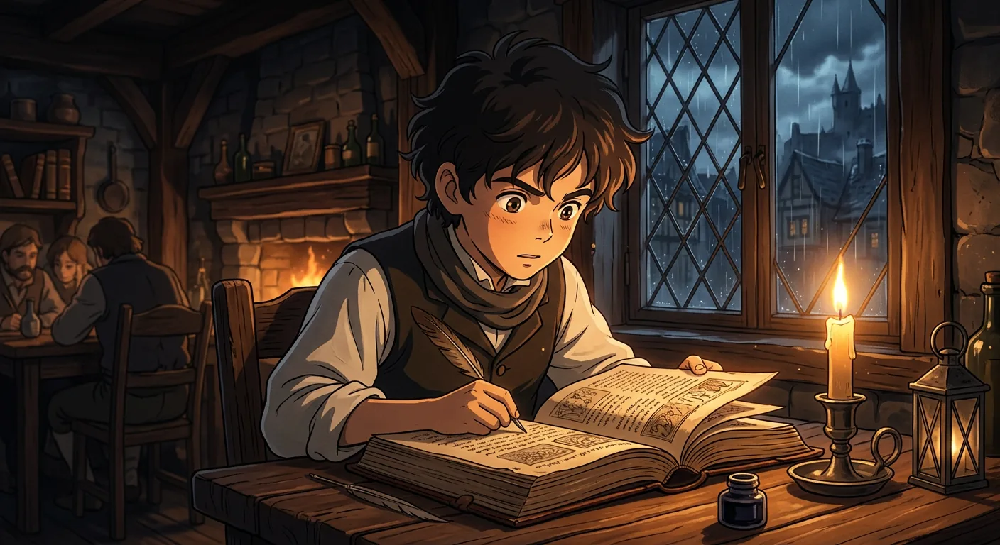
Seeds of Obsession and Harmony
Victor grew up in a beautiful home near the mountains and a lake. He lived with his dear cousin Elizabeth and had a best friend named Henry Clerval. Elizabeth was calm and gentle, and she loved the pretty views outside. Victor was different—he always wanted to know how things worked. Henry loved adventure stories and dreamed of helping people someday. The three children played together and made each other happy.
Victor's family moved to a lovely house near Geneva. One rainy day, young Victor found an old science book at an inn. He became very excited about it and wanted to learn everything inside. His father said the book was not very good, but Victor kept reading anyway. He dreamed of making wonderful discoveries that could help people. Later, Victor saw a powerful storm with bright lightning. It made him curious about new ideas. He started thinking about different kinds of science instead. For now, Victor felt peaceful and happy with his family and friends.
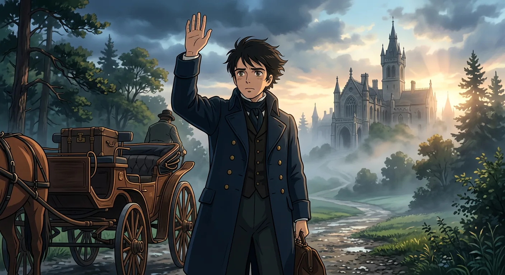
A Mother's Sacrifice and Farewell
Before Victor left home for a new school far away, something very sad happened. His dear cousin Elizabeth became very sick with a high fever. His mother loved Elizabeth so much that she stayed by her bed day and night to help her get better. Elizabeth did get well again, but then Victor's mother became sick too. She was so brave and kind, even when she felt poorly. She held Victor's and Elizabeth's hands and told them how much she loved them both. Then she closed her eyes and went to sleep forever. Victor and his whole family were very, very sad for a long time.
When Victor finally went to his new school called Ingolstadt, he met some teachers there. One teacher was grumpy and not very nice. But another teacher named Waldman was wonderful and kind. He talked about science in such an exciting way that Victor felt his heart fill with big dreams. He wanted to learn everything about how the world works and discover amazing new things.
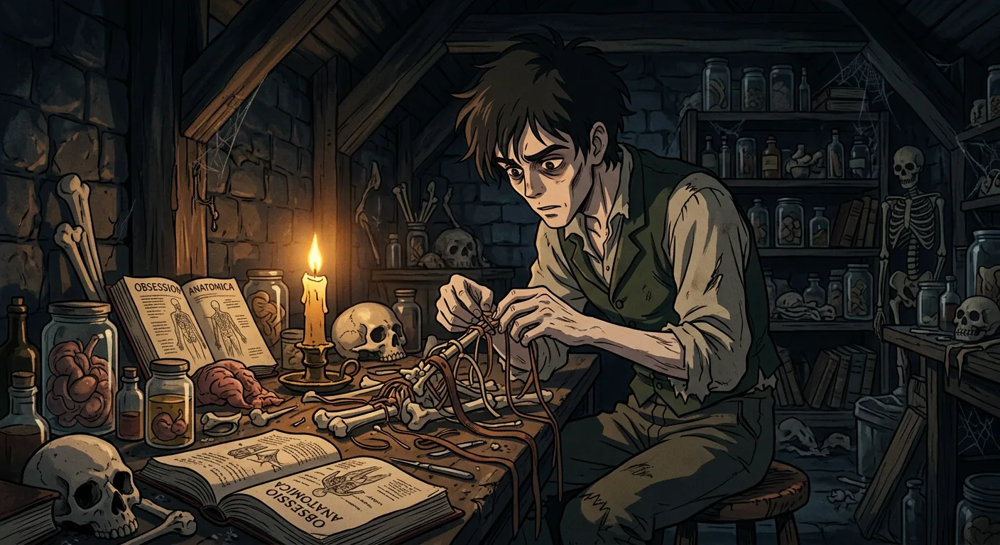
The Secret of Life and Death
From that day on, Victor loved science more than anything else. He spent all his time learning about how things work. He made two good friends who were teachers. One was named Krempe, and one was named Waldman. Waldman was very kind and helped Victor understand hard things. Victor worked so hard that sometimes he stayed up all night studying until the sun came up.
Two whole years went by, and Victor got very good at science. Everyone at the school was amazed by how much he learned. But then Victor started wondering about something very big. He wanted to know what makes living things alive. He read many books and studied for a long, long time. Then one day, he had an amazing idea. He thought maybe he could make something come to life all by himself. Victor got so excited that he started working on a secret project. He worked alone in a little room at the top of his house. He forgot to write letters to his family and forgot to go outside and enjoy the pretty flowers and trees. He just kept working and working on his big secret.
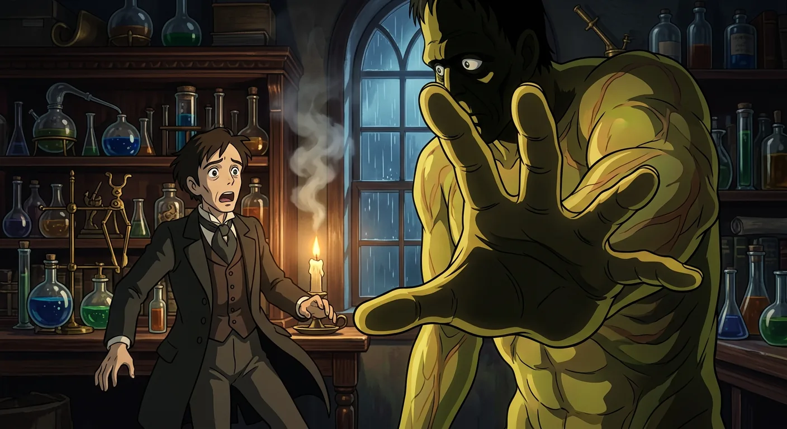
The Creature Wakes to Horror
On a dark rainy night, Victor finally finished his big science project. He had worked so hard to bring his creation to life. But when the creature opened its eyes, Victor felt very scared instead of happy. The creature looked strange and not at all what Victor had hoped for. Victor ran away to his room and had bad dreams all night long.
The next morning, Victor walked through the town feeling worried and sad. Then something wonderful happened! His best friend Henry arrived for a surprise visit. Henry made Victor smile and think of home and all the people he loved. When they went back to Victor's apartment, the creature was gone. Victor felt so relieved that he got a little silly, jumping around and laughing.
But then Victor got very sick from all his worry and fear. Kind Henry took care of him for many months. Slowly, as spring came and flowers began to bloom, Victor started feeling better again.
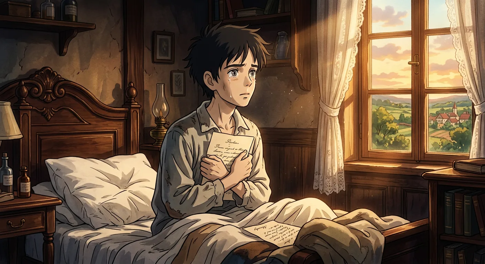
A Letter from Home and Justine's Story
Victor received a letter from Elizabeth, and it made him so happy. She wrote about everyone at home in Geneva. His father was healthy and missed him very much. His brother Ernest was sixteen now and full of energy. Elizabeth also told him about Justine, a kind young woman who lived with their family. Justine had a hard life before, but now she was safe and loved. And little William was growing up with bright blue eyes and the sweetest smile.
Reading about his family helped Victor feel better after being sick for so long. Soon he was strong enough to leave his room. His friend Henry was there to help him. They studied interesting things together and took long walks in the countryside. The spring flowers were blooming, and the air smelled so fresh and sweet. Victor felt like himself again, happy and free. He walked with Henry under the warm May sun, and everything felt peaceful and good.
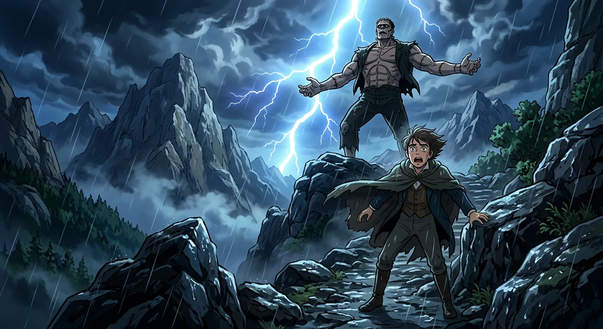
A Father's Letter of Death
A sad letter came from Victor's father with terrible news. Victor's little brother William had been hurt very badly. Sweet William would not be coming home again. Everyone in the family missed him so very much. Elizabeth felt sad because William had been wearing a special picture of their mother, and now it was gone. Victor's father asked him to please come home so the family could be together.
Victor felt his heart break when he read the letter. His kind friend Clerval helped him get ready for the long trip home. As Victor traveled through the mountains and past the lake, he felt both happy to see his home and very, very sad. One stormy night, lightning lit up the sky, and Victor saw a huge, strange figure in the darkness. It was the creature he had made long ago. Victor watched it disappear into the mountains. When he finally got home, he learned that a gentle young woman named Justine was being blamed for what happened. Victor knew she was innocent, but he did not know how to help her.
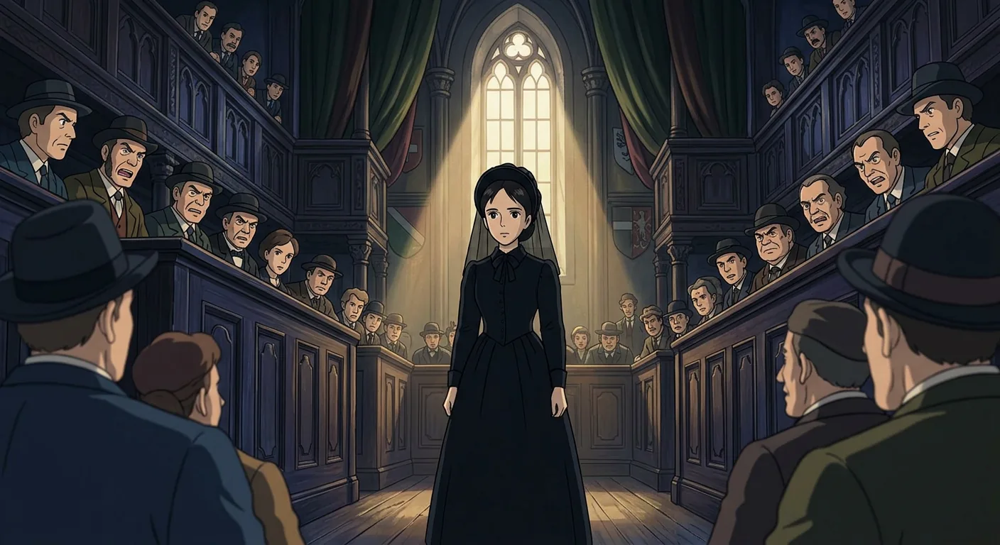
Mockery of Justice and Living Torture
Victor felt very sad and worried. He knew something no one else knew. A kind young woman named Justine was in big trouble for something she did not do. Victor's little brother William had been hurt, and now everyone blamed Justine. But Victor knew she was innocent.
Justine stood before the judges looking calm and brave. She told the truth about where she had been that night. She had been searching for William and got very tired. She fell asleep in a barn. But people found a special picture in her pocket, and they thought this meant she was guilty. Justine did not know how it got there.
Elizabeth spoke up for Justine. She told everyone how kind and good Justine had always been. But it did not help. Victor wanted to tell the truth, but he was afraid no one would believe him. In the end, Justine had to go away forever, and Victor's heart felt heavier than ever before.
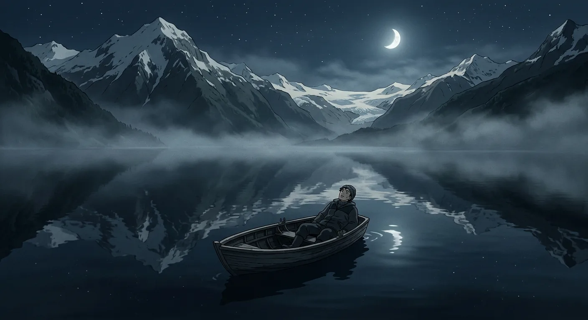
Guilt's Weight Upon the Living
Victor felt very sad after something terrible happened. He blamed himself, even though he tried hard to keep it secret. He could not sleep, and he walked around feeling like a ghost. His father noticed how unhappy he looked and tried to help him feel better. But Victor could not tell anyone why he felt so bad inside.
The family moved to a lovely house by a lake called Belrive. Victor would take a little boat out on the water late at night when everyone else was sleeping. The quiet lake helped him think. He stayed strong because he loved Elizabeth and his father and little brother very much. Elizabeth felt sad too, and that made Victor's heart ache even more. He wished he could make her smile again like before.
Finally, Victor decided to visit the tall, snowy mountains near a place called Chamounix. The beautiful valleys and waterfalls made him feel a tiny bit better. That night, watching lightning dance over the mountaintops, he finally fell asleep.
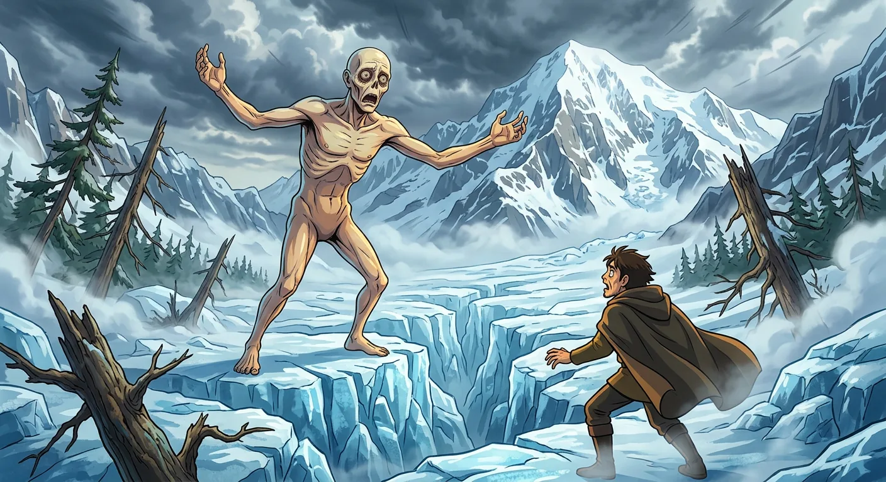
Solace and Shadows Among the Glaciers
After a very hard day, the young man walked through a beautiful valley filled with ice and tall mountains. He watched a giant glacier creep slowly down from the snowy peaks. Broken pine trees lay scattered on the ground. The quiet, icy world felt peaceful and helped his sad heart feel a little better. That night, he dreamed of mountains and soaring eagles watching over him like gentle friends.
But morning brought rain and fog and sad feelings again. He decided to climb higher up the mountain, hoping the amazing sights would cheer him. The path was hard, with snow and fallen trees everywhere. When he reached the top, he saw the great mountain called Mont Blanc rising above a sea of ice. His heart felt lighter for a moment. Then he saw someone coming toward him very fast across the ice. It was the creature he had made long ago. At first he felt angry and scared. But the creature spoke gently and asked to tell his story. Slowly, the young man began to listen, and they walked together to a little hut to talk by the fire.
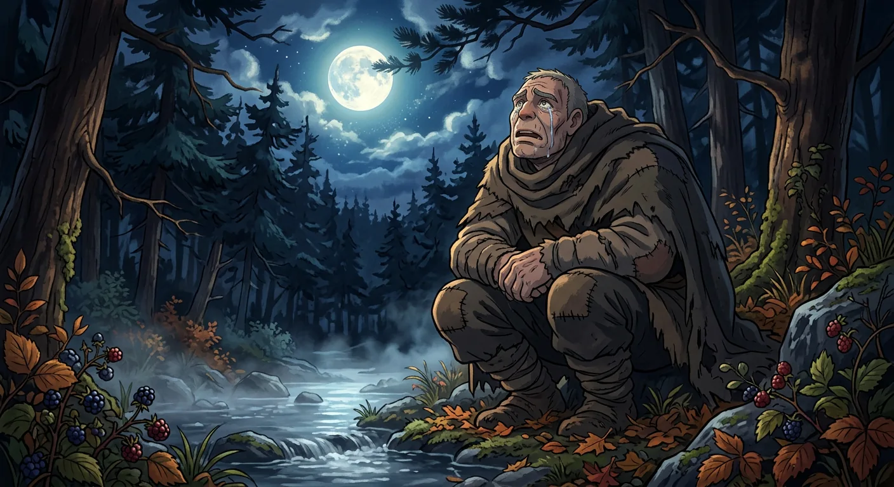
Awakening to a World of Sensation
The creature tells his own story now, and it is very touching. When he first woke up, everything felt strange and confusing. Lights, sounds, and feelings all came at once. He did not understand any of it. Slowly, bit by bit, he began to learn.
He found a forest and stayed near a little brook. He was so hungry and thirsty! He ate berries and drank water like a wild animal might. He felt cold and lonely, and he cried. But then the moon rose in the sky, soft and glowing. He looked up at it with wonder. It was the first beautiful thing he had ever seen.
As days passed, his mind grew sharper. He learned to hear birds singing. He discovered fire and found it could keep him warm, but it could also hurt. When he met people, they were scared of him and chased him away. This made him very sad. Finally he found a tiny hiding spot near a cozy cottage. Through a crack in the wall, he watched a kind family inside. An old man played sweet music that made the creature feel something new and wonderful. He decided to stay and watch them, hoping to learn more.
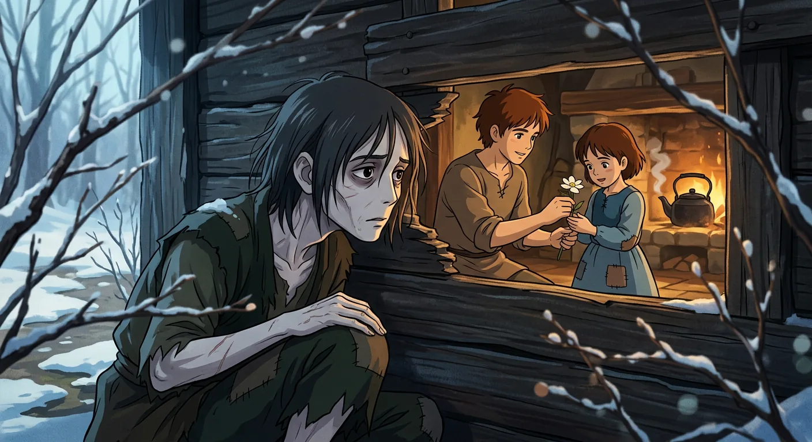
Lessons in Language and Love
From a hidden spot, a lonely creature watched a small family in their cottage. The family was Felix, his sister Agatha, and their kind old father who could not see. They were gentle and loving with each other. The creature wanted so much to be their friend, but felt too shy and different to say hello.
The creature noticed the family did not have much food or money. They were poor but still shared everything with each other. This made the creature feel sorry for taking their food before. So the creature stopped and ate only berries from the forest instead. Even better, the creature started helping in secret! Every night, the creature chopped wood and left it for them. When Agatha found the wood pile full, she was so surprised and happy. This made the creature feel warm inside.
The creature also listened carefully and started learning words. Fire. Bread. Sister. Brother. Each new word felt like magic. Spring came with flowers and sunshine. The creature felt hopeful that someday, with kind words and patience, the family might become friends.
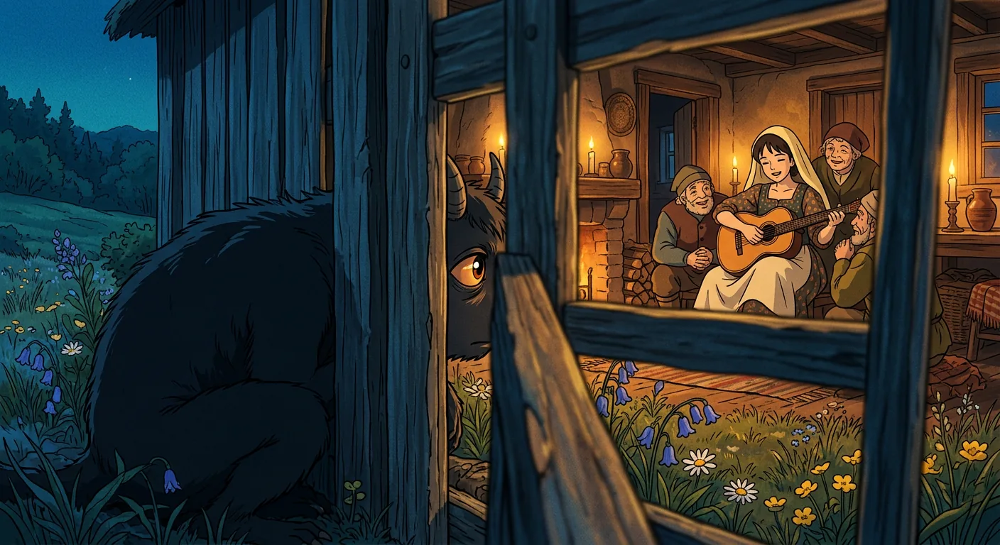
Safie's Arrival Brings Light and Language
Spring came with sunshine and flowers, bringing something wonderful to the little cottage. A young woman named Safie arrived from far away. She had a sweet face and a voice as pretty as a bird's song. When Felix saw her, his sad face became happy again. Agatha kissed her hands to say welcome. The kind old father gave her a warm hug.
Safie did not speak the same language as the cottage family. So Felix began to teach her new words every day. The creature watched and listened from his hiding spot. He learned the words too! He found out about faraway lands and people from long ago. Learning felt exciting and wonderful.
But learning also made the creature feel lonely. He saw how much the family loved each other. He wished someone would love him too. He had no family of his own. Still, he cared deeply for his cottage friends and kept watching over them.
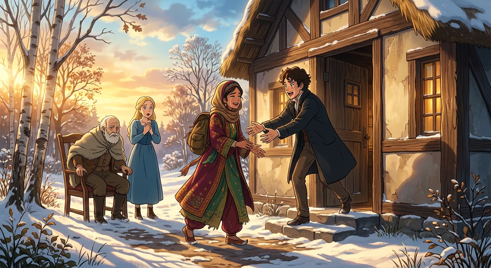
The De Laceys' Fall From Grace
The creature had been watching a kind family through a crack in the wall. He learned their story, and it made him feel many new feelings inside his heart.
The family was called De Lacey. The old blind father, his son Felix, and his daughter Agatha once lived a happy life in a big city in France. They had a nice home and many friends. But something sad happened. A man they tried to help got them into trouble. Felix had been very brave and helped this man escape when he was treated unfairly. But the man was not kind in return. He broke his promise and left the family all alone. The De Laceys lost their home and had to move far away to a tiny cottage. They were poor now and very sad. But then something wonderful happened. A young woman named Safie traveled a long, hard way to find them. She cared about Felix very much. When she arrived at their door, everyone felt hope again.
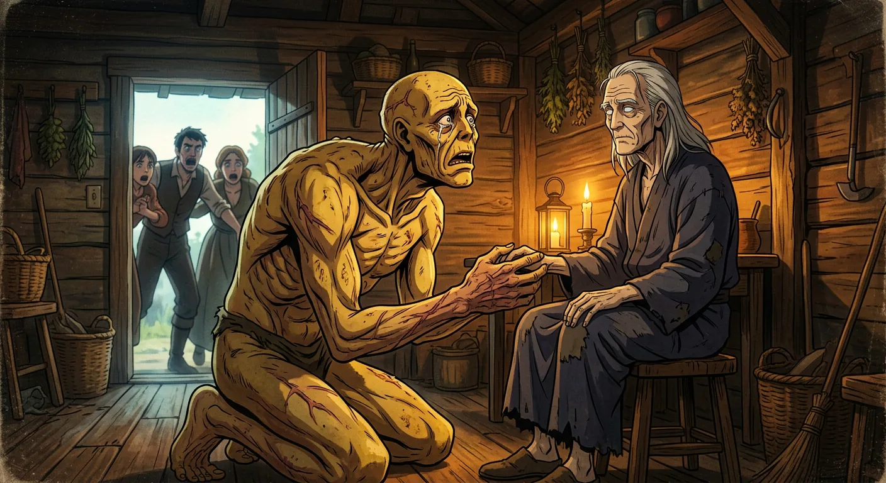
Awakening Through Forbidden Books
One day, the creature found a bag in the forest with three special books inside. He read them all and they made him feel many things. Some parts made him feel brave and hopeful. Other parts made him feel very sad and lonely. He wished he had a family like other people did. Then he found old papers that told him how he was made. Reading them made him feel unwanted, and that hurt his heart.
But he still had hope. He wanted the kind cottage family to be his friends. He made a plan to talk to the blind grandfather first. The old man could not see him, so he would just hear his gentle voice. When they talked, the grandfather was so kind and warm. He said he wanted to help. The creature felt happy for the first time ever. But then the others came home and got very scared when they saw him. The creature ran away to his little shelter, feeling more alone than before.
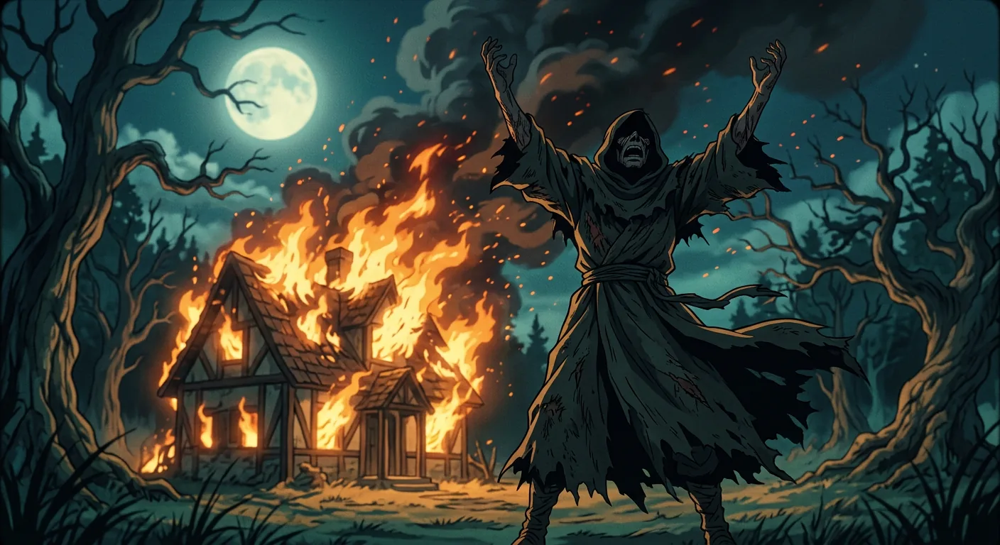
A Hell Within and War Declared
After leaving the kind family, the creature felt so sad and alone. He wandered through the dark woods feeling lost and hurt inside. When morning came, he felt a little better and went back to the cottage. But the family had moved away forever. They were too frightened to stay.
Now the creature had no friends at all. He decided to find Victor, the person who made him. He traveled far through rain and snow, always hiding so people would not see him. One day he saved a girl who fell into a river. But instead of saying thank you, someone hurt him. This made him feel that no one would ever be kind to him.
When he finally found Victor, he asked for just one thing. He wanted Victor to make him a friend, someone who would not run away, someone who might understand him and keep him company.
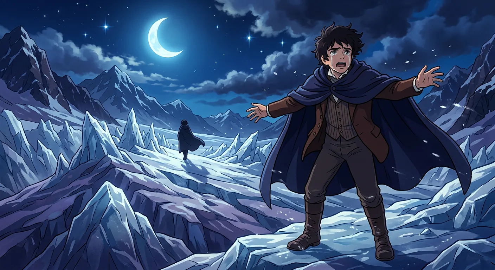
A Creature's Desperate Bargain
High up on a cold, icy mountain, the creature finished telling his story. He looked at me and asked for something very important. He wanted me to make a friend for him—someone just like him. He said he was so lonely, and that was why he had been so angry and mean. If he had a friend, he promised he would be kind and gentle instead.
At first I said no. I was worried about making another creature. But he spoke so softly and sadly that I started to feel sorry for him. He promised that he and his friend would go far, far away to live peacefully in the wild. They would eat berries and never bother anyone again. After thinking for a long, long time, I finally said yes. I would make him a companion. The creature thanked me and hurried away across the ice. I walked home feeling tired and worried, wondering what I had agreed to do.
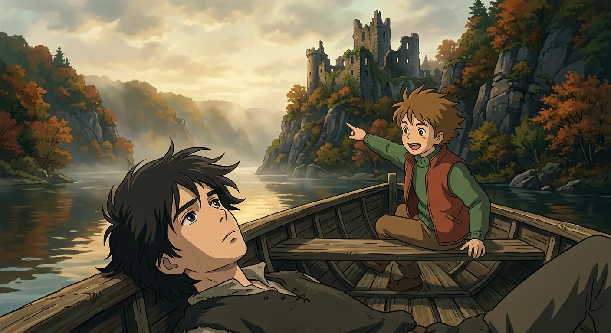
A Promise Deferred, a Journey Planned
Victor went back home to Geneva, but he felt very worried. He had made a promise he did not want to keep. It made him feel heavy and sad inside. His father noticed Victor seemed a little better and had a happy idea. He talked to Victor about marrying Elizabeth someday. Victor loved Elizabeth very much, but he was not ready yet. He had something important to do first.
Victor asked if he could travel to England to learn new things. His father said yes and made sure Victor's dear friend Clerval could go with him. In late September, Victor said goodbye to Elizabeth and started his long journey. When Clerval met him, everything felt brighter. Clerval loved looking at beautiful sunsets and rivers and old castles. They floated down a big river called the Rhine in a boat. Victor watched the blue sky and felt a little more peaceful. Together, the two friends traveled all the way to England, where they saw the tall white cliffs and the many church towers of London.
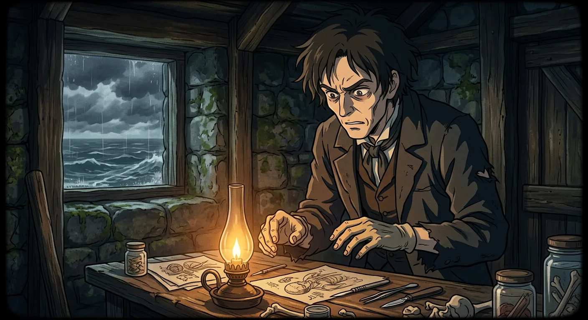
A Blasted Tree's Bitter Journey
Victor and his friend Clerval traveled to London to rest after a hard time. Clerval was happy and excited to meet new people and learn new things. He dreamed of one day visiting faraway places like India. But Victor felt very sad inside and could not enjoy anything. He missed feeling happy like he used to feel long ago.
The two friends decided to travel through the beautiful English countryside. They saw old forests, pretty colleges, and sparkling lakes surrounded by mountains. The nature was so lovely it reminded Victor of his home in Switzerland. Even though the world was beautiful, Victor still felt heavy and tired in his heart. After a while, Victor told Clerval he needed to go on alone for a little while. Clerval was worried but understood. Victor traveled far north to a tiny rocky island where only a few people lived. There he worked on a secret project by himself, feeling lonelier than ever.
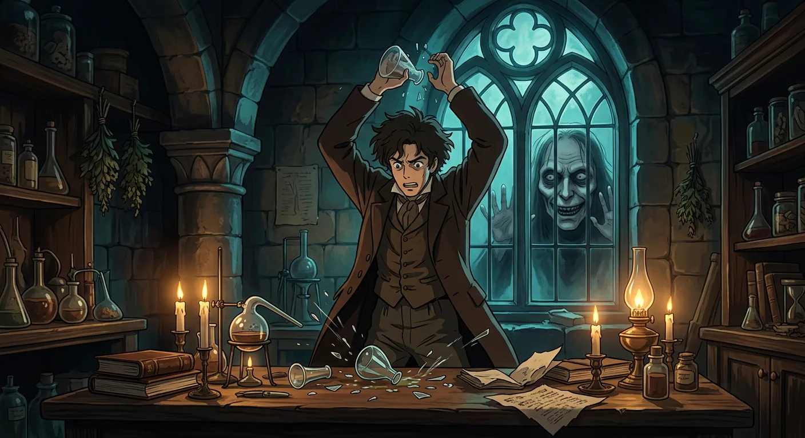
The Promise Broken at Moonrise
Victor sat alone in his workshop one night, thinking very hard. He had been making a second creature to be a friend for the first one. But now he felt worried. What if this new creature was not kind? What if the two creatures had babies who might cause trouble in the world? Victor did not know what to do.
Then he looked up and saw the creature watching him through the window. The creature looked so eager and hopeful. But Victor had made up his mind. He could not finish making the new friend. He stopped his work right there. The creature was very, very sad and ran away into the dark night.
Later, Victor had to clean up his workshop. He took a boat out on the water to do this. He fell asleep in the little boat. When he woke up, the wind had pushed him far, far away! He floated for a long time until he finally saw land. He was so happy and tired when he reached a little town by the sea.
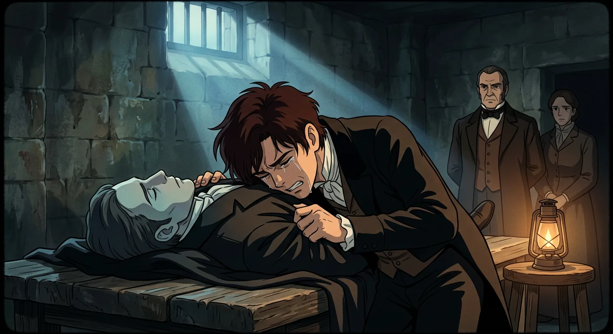
The Death of Henry Clerval
Victor was taken to see a kind old judge named Kirwin. Some people from the village said they had seen a boat and a person near the water that night. They thought Victor might have done something wrong. Then the judge asked Victor to look at someone who had been hurt very badly. When Victor saw who it was, his heart broke into pieces. It was his dear friend Henry Clerval. Henry was gone forever, and Victor knew the creature he had made was to blame.
Victor became very, very sick with sadness and had to rest for a long time. He stayed in a small room and had terrible dreams. But then something wonderful happened. His father came all the way from home to be with him. Having his father near helped Victor start to feel a tiny bit better. Soon the judge learned that Victor could not have hurt Henry because he was far away when it happened. Victor was allowed to leave, and he and his father began the long journey back home.
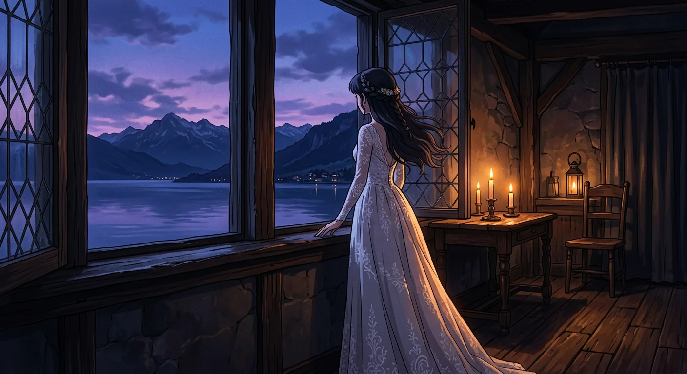
The Burden of Unspoken Guilt
The long boat trip was over, and Victor came to Paris at last. He was so tired and weak that he had to rest before going home. His kind father stayed close and tried to help him feel better. But Victor had a heavy secret that made his heart ache. He felt bad about something he could not tell anyone. He wanted to explain, but the words came out all jumbled. His father thought Victor was just saying silly things because he had been sick.
Then a sweet letter came from Elizabeth. She wanted to know if Victor still cared about her. Victor did care, very much! He wrote back and said they would get married soon. When Victor got home to Geneva, he saw Elizabeth again. She looked tired, but her kind smile made him feel warm inside. The wedding day came, and everyone was happy. Victor and Elizabeth took a boat ride across a beautiful lake. The mountains looked lovely, and for a little while, Victor felt peaceful and glad.
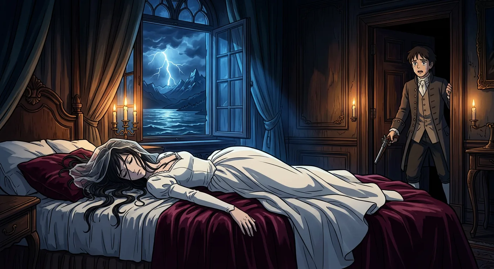
The Creature's Deadly Wedding Night Vengeance
Victor and Elizabeth arrived at a little inn by the lake on a stormy night. The wind blew hard and dark clouds covered the moon. Victor felt worried because he was expecting trouble. He wanted to keep Elizabeth safe, so he asked her to rest in her room while he looked around the inn.
But something sad happened while Victor was away. The Creature had come to the inn that night. When Victor found out, his heart broke into pieces. Elizabeth was gone forever, and he would never see her again. The Creature ran away into the dark lake before Victor could catch him. Victor became very, very sick with sadness. He hurried home to his family, but more sad news waited for him there. His dear father was so heartbroken that he passed away too. Victor felt so alone now. He decided he would search for the Creature himself, even if it meant traveling to faraway, icy places at the end of the world.
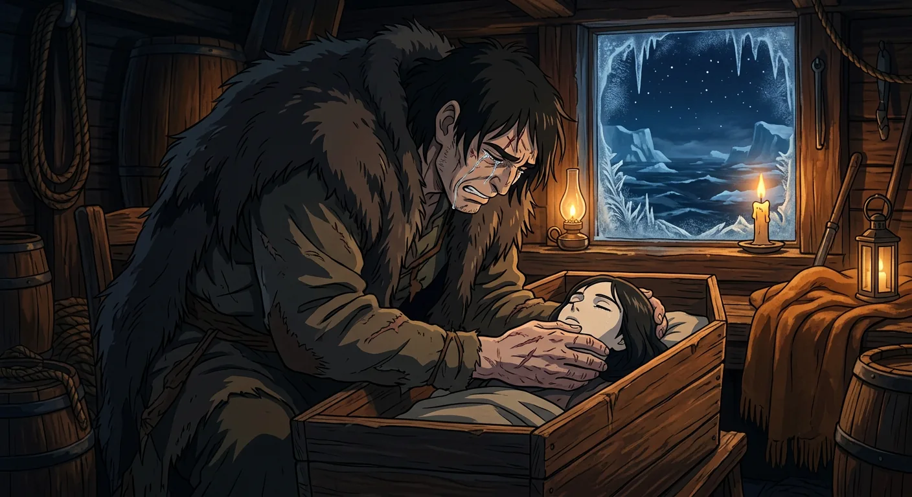
A Vow of Vengeance Begins
Victor felt so sad that he had to leave his home forever. He missed his family very much. He went to the quiet place where his loved ones were resting and made a promise to find the creature who had hurt them. Just then, he heard a strange laugh in the darkness. The creature was nearby, watching him.
Victor followed the creature far, far away, through snowy lands and icy places. He traveled for a very long time. Sometimes he had happy dreams about his family, and those dreams helped him feel a little better. Finally, Victor reached the frozen ocean, but the ice broke apart beneath him. He floated on a tiny piece of ice until Walton's ship found him and brought him aboard. Victor was very tired and weak from his long journey. He told Walton his whole story, and Walton believed him. The ship turned around to sail back home, carrying this amazing tale with them.